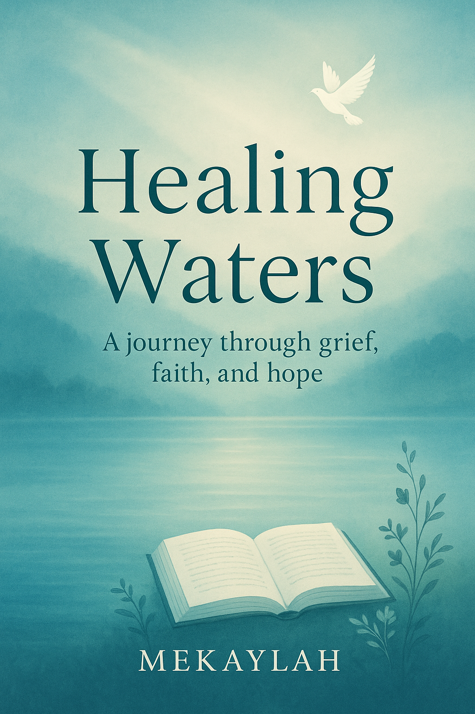

Heling Waters
A Journey Through Grief, Faith and hope
Table Of Contents
Introduction
chapetr 1: Wounds of the heart
chapter 2: When the spirit feels heavy
chapetr 3: Learning to forgive
chapter 4: Letting go of the past
chapetr 5: Finding new strength